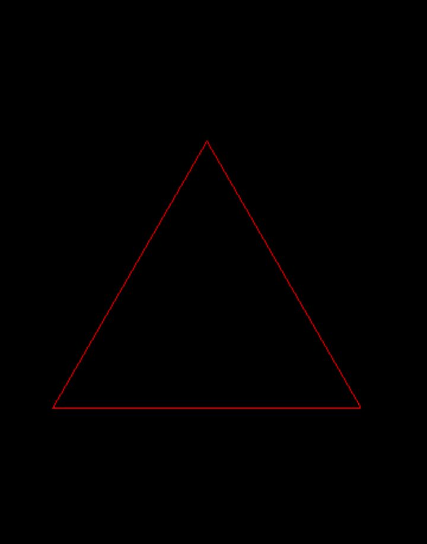
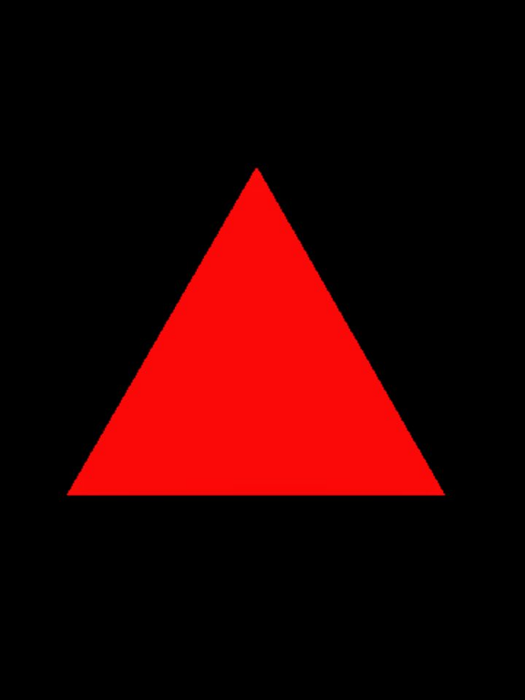
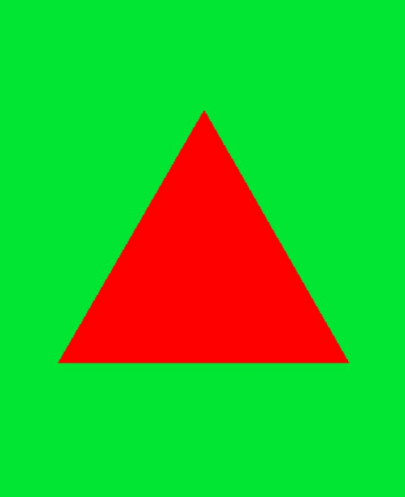
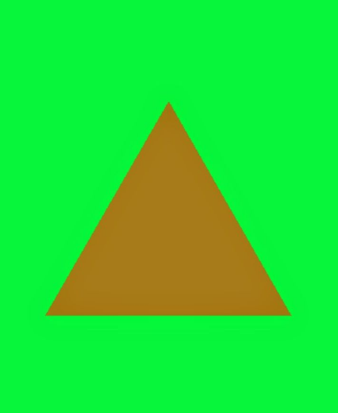
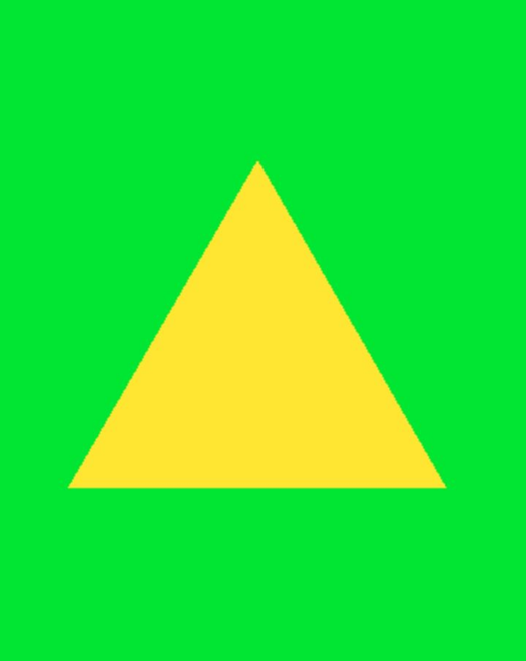

Shapes
Overview
Shapes are classes that all inherit from the Geometry interface.
Shapes serve as the base for any copyable or drawable element on the
screen, so learning them is essential.
Usage
To start, we'll use the Shape class, contained in the header "remake2d/shape.hpp",
whose class is templated on a number of points, and whose constructor takes two parameters:
template<size_t POINT_COUNT> requires (POINT_COUNT > (u8)point::min && POINT_COUNT <= (u8)point::max)
Shape(const Vec2d& center, const Dim2d& size);
POINT_COUNT: number of sides of the shape.center: the shape's center.size: the shape's size/diameters.
Unlike Window, shapes are positioned directly from their center.
The size represents the shape's vertical and horizontal diameter.
Indeed, shapes can be irregular on X and Y.
POINT_COUNT itself determines the number of sides of the shape.
Let's declare a shape named triangle:
Numbers limit point are reprenseted by following enumeration:
Drawing a shape
Now we can display our triangle on screen thanks to the draw method of the
Window class:
void draw(const Geometry& shape, Color color = rmk::color::white, std::string_view viewport = "") noexcept;
- shape : shape to draw
- color : color of the shape's outline
- viewport : targeted viewport (optional, empty = global viewport)
Let's place ourselves in the game loop and write:
#include <remake2d/window.hpp>
#include <remake2d/loop.hpp>
#include <remake2d/shape.hpp>
int main(void) {
rmk::Window win;
rmk::Shape<3> triangle({200, 200}, {50, 50});
rmk::loop.execute(win, [&](void) {
win.draw(triangle, rmk::color::red);
});
rmk::loop.update();
}

It is also possible to fill the shape with the fill method, similar to draw:
void fill(const Geometry& shape, Color color = rmk::color::white, std::string_view viewport = "") noexcept;

Transparency
It is possible to make shapes somewhat transparent. By reducing the alpha value of Color,
we also reduce the opacity of the shape drawn on screen.
example:
without transparency:
win.clear(rmk::color::green);
win.fill(triangle, {255, 0, 0, 128}); // semi-transparent red triangle

with transparency:
win.clear(rmk::color::green);
win.fill(triangle, {255, 0, 0, 128}); // semi-transparent red triangle

You can change the transparency mode via the blendMode method of the Window class, which can take
three distinct values:
namespace window {
enum class blendmode : u8 {
none = (u8)SDL_BLENDMODE_NONE,
normal = (u8)SDL_BLENDMODE_BLEND,
add = (u8)SDL_BLENDMODE_ADD
};
}
none: disable transparency on the windownormal: default transparency modeadd: additive mode with the background color
example:
win.blendMode(rmk::window::blendmode::add);
win.clear(rmk::color::green);
win.fill(triangle, {255, 0, 0, 128});

Methods
The Geometry class has several pure virtual methods that Shape inherits from.
Among these, we have:
virtual u8 points(void) const noexcept = 0; // number of points
virtual Dim2d size(void) const noexcept = 0; // shape size
virtual Vec2d center(void) const noexcept = 0; // center position
virtual const Vec2d* pointsPos(void) const noexcept = 0; // raw points array
virtual void move(const Vec2d& center) noexcept = 0; // translate shape
virtual void rotate(f32 angle) noexcept = 0; // rotate shape (radians)
virtual void scale(const Fact2d& scaling) noexcept = 0; // scale shape
virtual void resize(const Dim2d& size) noexcept = 0; // resize shape
virtual void transform(const Vec2d& center, f32 angle, const Fact2d& scaling) noexcept = 0; // translate + rotate + scale
template<IsShape S> S as(void) const noexcept; // cast to another shape type
virtual bool hasIntersected(const Geometry& other) const noexcept = 0; // collision test
Shape types
RE:MAKE 2D offers several type aliases and specialized types for shapes:
// Alias
using Line = Shape<2>; // line segment
using Triangle = Shape<3>; // triangle
using Losange = Shape<4>; // diamond shape
using Hexagone = Shape<6>; // hexagon
using Ellipse = Shape<36>; // ellipse approximation
// Derived types
class Point : public Shape<1>; // single point (dedicated class, not an alias)
class Rectangle : public Shape<4>; // axis-aligned rectangle (optimized build)
class Square : public Rectangle; // uniform rectangle
class Circle : public Ellipse; // circle (w == h enforced)
Info
For the Square and Circle types, only the resize method is overridden to take just the width into account (transform is not
overridden and therefore follows Geometry's standard behavior).
The constructors of the Square and Circle types take an f32 rather than a Dim2d in their constructor.